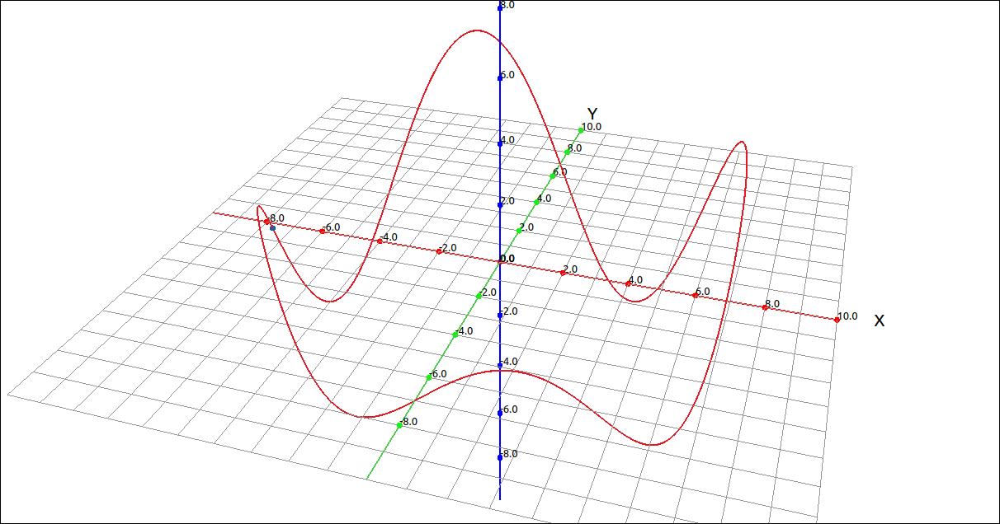
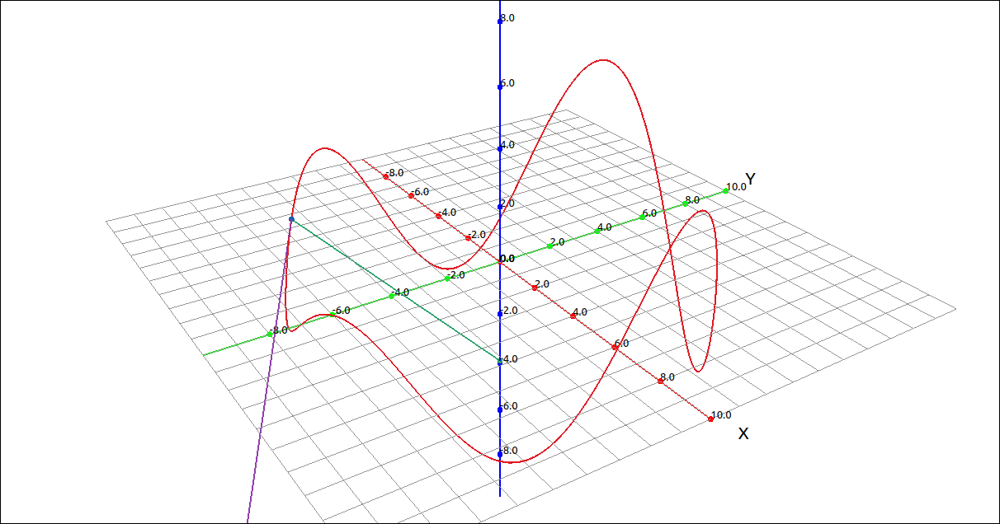

Motion in Space#
Velocity, Speed, and Acceleration#
Velocity, speed, and acceleration of vector-valued functions is the same as they are for real-valued functions, the only difference is a vector quantity verses a scalar quantity.
Definition: Velocity, Speed, and Acceleration
Let \(\mathbf{r}(t)\) be a vector-valued function that designates the position of an object at any moment in time and has both first and second derivatives. The velocity vector \(\mathbf{v}(t)\) is given by
The speed is defined to be
The acceleration vector \(\mathbf{a}(t)\) is given by
Example: Rollercoaster Curve#
In this example we will find the velocity and acceleration vectors for a rollercoaster curve,

\(\left( 7 \cos{\left(t \right)}, \ 7 \sin{\left(t \right)}, \ 3 \sin{\left(4 t \right)} + 2 \cos{\left(3 t \right)}\right)\)#
CLAE#
First input the curve, we can use either direct input into the CAS or the vector input tool, either will work for this example.
[7*cos(t),7*sin(t),3*sin(4*t) + 2*cos(3*t)]
Graphing the curve gives us the above image. Taking the first and second derivatives of this vector-valued function gives us,
To visualize these we will plot them on the graph of the curve. Evaluate the curve as well as the velocity and acceleration vectors at a.
Click and drag \(\mathbf{r}(a)\) to the graph, this should come in as a point on the curve. Also plot \(\mathbf{v}(a)\) and \(\mathbf{a}(a)\), make sure to change these to vector sets and set their initial points to \(\mathbf{r}(a)\) (using the CAS designation).

Rollercoaster Curve with Velocity and Acceleration Vectors#
Use the a slider to get a feel for the velocity and acceleration vectors as the point moves along the curve.
Components of the Acceleration Vector#
Theorem: The Plane of the Acceleration Vector
Let \(\mathbf{r}(t)\) be a vector-valued function that designates the position of an object at any moment in time and has both first and second derivatives. The acceleration vector can be written as a linear combination of the unit tangent vector and the unit normal vector. Hence the acceleration vector is in the plane formed by the unit tangent vector and the unit normal vector, the osculating plane.
where \(v(t)\) is the speed of the object and \(\kappa\) is the curvature of the curve C defined by \(\mathbf{r}(t).\)
The coefficients of \(\mathbf{T}(t)\) and \(\mathbf{N}(t)\) are referred to as the tangential component of acceleration and the normal component of acceleration, respectively. It is common to write \(a_{\mathbf{T}}\) to denote the tangential component and \(a_{\mathbf{N}}\) to denote the normal component. We will not go through the derivations of the following results, but it is another way to calculate the tangential and normal components of acceleration vector.
Theorem: Tangential and Normal Components of Acceleration
Let \(\mathbf{r}(t)\) be a vector-valued function that designates the position of an object at any moment in time and has both first and second derivatives. The acceleration vector can be written as,
where
Example: Rollercoaster Curve#
In this example we will revisit the rollercoaster curve,
\(\left( 7 \cos{\left(t \right)}, \ 7 \sin{\left(t \right)}, \ 3 \sin{\left(4 t \right)} + 2 \cos{\left(3 t \right)}\right)\)#
CLAE#
First input the curve, we can use either direct input into the CAS or the vector input tool, either will work for this example.
[7*cos(t),7*sin(t),3*sin(4*t) + 2*cos(3*t)]
Graphing the curve gives us the above image. Taking the first and second derivatives of this vector-valued function gives us,
and
Calculating
so
and
so